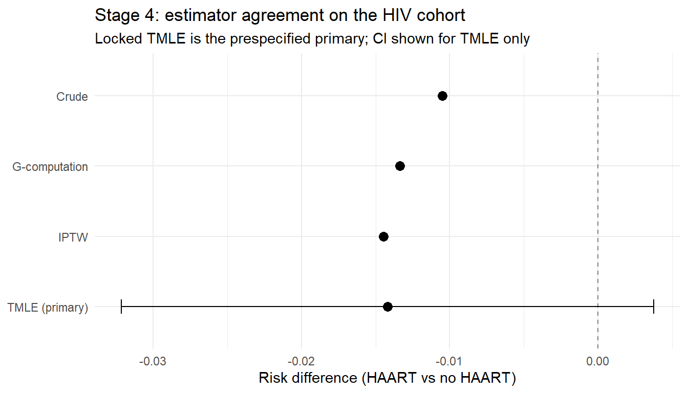

Pre-specified targeted learning with outcome-blind diagnostics, plasmode candidate selection, and a data-quality stress test
If you only read one thing
A high-stakes real-world-evidence estimate is only as credible as the process that produced it. Lock the analysis plan and run every diagnostic outcome-blind, so that no analytic choice is made after seeing the treatment-outcome association. This chapter’s cleanTMLE workflow enforces that discipline with an analysis lock, audit logs, a data-quality stress test, and a GO / FLAG / STOP rule that programmatically refuses to read the outcome until the prespecified checkpoints are recorded.
You have specified a target trial (Hernán and Robins 2016), chosen an estimand, defended your DAG, fit a TMLE with Super Learner, and run the diagnostics in Chapter 16. Should the reviewer believe the estimate? In a regulatory or multi-site RWE setting, the answer increasingly turns on the process that produced it rather than the estimator alone. Was the analysis plan fixed before the outcome was inspected? Were the design and estimator choices documented as they were made? Can an external reviewer reconstruct every decision from a single archived record?
This chapter introduces the staged, outcome-blind workflow of (Muntner et al. 2024) and the clean-room governance arrangement that surrounds it. We then walk through the cleanTMLE R package, which provides the software layer for a staged TMLE analysis: an analysis lock with a SHA-256 fingerprint, automatic audit and decision logs, plasmode-based candidate selection, a data-quality stress test, and a GO / FLAG / STOP pre-outcome decision rule that programmatically refuses to read the primary outcome until the prespecified checkpoints have been recorded. A complete worked example on the HIV antiretroviral therapy cohort closes the chapter.
Learning objectives
Distinguish staged (sequenced) from clean-room (role-separated) RWE designs and explain why both reduce risk of outcome-informed analytic decisions
State the seven Causal Roadmap steps and locate each stage of the clean-room workflow within them
Build an analysis lock and explain what is and is not fingerprinted by it
Run an outcome-blind plasmode candidate selection across competing TMLE specifications
Extend plasmode simulation into a quantitative data-quality (DQ) stress test that bridges fit-for-purpose review and estimator selection
Apply the GO / FLAG / STOP decision rule with gate_all() and authorize_outcome_analysis()
Carry out the full pipeline on the HIV antiretroviral therapy cohort using cleanTMLE
This chapter assumes familiarity with TMLE (Chapter 8), Super Learner (Chapter 9), and the diagnostic framework of Chapter 16. It complements those tools by showing how to combine pre-outcome diagnostics, plasmode robustness screening, and an audit trail into a single reproducible record.
17.1 Two Ideas, One Goal
Two distinct ideas sit underneath modern RWE governance, and they are easy to conflate.
A staged analysis sequences the work so that decisions about cohort definition, propensity-score model, candidate estimator, and operating-characteristic thresholds are recorded before the observed treatment-outcome association is inspected. The decisions are not necessarily made by different people. They are made in a fixed order, and each stage produces an artefact that the next stage consumes.
A clean room adds a personnel and access constraint on top of that sequence. A blinded analyst writes the analysis plan, builds the cohort, runs the design diagnostics, and reaches a pre-outcome decision point; only then does a separate analyst link the outcome and execute the locked comparative analysis. The “clean room” label, adopted by (Muntner et al. 2024), borrows the manufacturing analogy: access to a sterile area is blocked until the protocol has been followed.
Feature
Staged design
Clean-room design
What is enforced
Sequence of analytic decisions
Sequence plus role separation and access control
Implemented by
Software lock + audit log
Software lock + institutional partition of duties
Residual risk
Analyst can deviate ad-hoc inside a stage
Personnel partition can be circumvented if not audited
Reviewer-facing artefact
Timestamped lock, audit log, decision log
Lock + log + data-manager attestation
The two arrangements are complementary, not alternatives. A defensible RWE pipeline can use both, applying the staged software workflow inside an institutional partition of duties.
When clean-room governance is required
Clean-room arrangements are common in:
Multi-site distributed networks (Sentinel, OHDSI, ENCePP) where patient-level data cannot leave participating sites
Post-marketing safety studies submitted to FDA, EMA, or PMDA
Comparative-effectiveness analyses where a sponsor must demonstrate that estimator choice did not follow the realised effect direction
Public-health surveillance where rapid iteration is incompatible with credibility
The goal in both cases is the same: an analytic decision made after seeing the treatment-outcome association is not credible, however good the analyst’s faith.
17.2 The Causal Roadmap, Restated as Stages
The Causal Roadmap (Petersen and Laan 2014; Dang, Tager, and Petersen 2023) sets out seven steps for any causal analysis: (1) state the causal question and estimand, (2) characterise the data, (3) assess identifiability, (4) define the statistical estimand, (5) choose a statistical model and estimator with prespecified operating characteristics, (6) specify sensitivity analyses, (7) compare alternative designs by simulation.
A staged clean-room workflow is that roadmap executed in a particular order, with a checkpoint between each substantive decision and a software-enforced barrier separating outcome-blind work from outcome-using work.
Stage
Purpose
Reads the outcome?
0
Feasibility, target-trial specification, statistical analysis plan (SAP) drafting
Stage 1a fingerprints the analytic specification. Every later stage is reconciled against the lock hash, so a reviewer can detect any silent change to the cohort, covariates, or learner library.
Stages 1b through 3 are outcome-blind. They use covariates, treatment, event counts, marginal outcome summaries, synthetic outcomes, and negative-control outcomes, never the observed treatment-primary-outcome association.
The pre-outcome decision is structural, not advisory. Stage 4 estimators check for a recorded authorisation and refuse to execute without one.
The decision log captures rationales. Whenever the analyst deviates from the recorded plan (drops a covariate, narrows the NC panel, relaxes a threshold), the deviation appears as a separate entry an external reviewer can read.
This sequencing addresses a limitation of pure preregistration. In practice, RWE analysts run into coding limitations, sparse events, covariate imbalance, model-convergence problems, and missingness, all of which force decisions after data access but before the comparative effect is estimated. The staged workflow gives those decisions a home, a timestamp, and a rationale, rather than letting them slip into the comparative analysis as silent ad-hoc choices.
Outcome-blind in this chapter
Outcome-blind means decisions about cohort construction, candidate estimators, simulation scenarios, decision thresholds, and primary-estimator selection are made without inspecting the observed treatment-outcome association. Analysts may use baseline covariates, treatment assignment, event counts, marginal outcome summaries used internally by the plasmode generator, synthetic outcomes from plasmode simulations, and negative-control outcomes. The observed treatment-primary-outcome relationship is not used for estimator selection or design revision before the pre-outcome decision point.
17.3 The cleanTMLE Package
cleanTMLE(Mertens 2026) is the R package that operationalises Stages 1a through 4 of this workflow for a binary point exposure, a binary outcome, and the marginal risk-difference estimand. It is the software layer of the clean room. It does not replace target-trial design, fit-for-purpose data review, validation studies, or independent governance, but it produces the reproducible record an external reviewer reads.
The package depends on survival, ggplot2, digest, and (for the SuperLearner library) SuperLearner and glmnet. The IPCW-TMLE (inverse probability of censoring weighting) path additionally uses the tmle package.
17.3.1 What the lock fingerprints
create_analysis_lock() builds the central object on which every later stage depends. The lock contains:
The analytic dataset (treatment, outcome, and covariate columns) with the outcome optionally masked
The treatment, outcome, and sorted covariate column names
The Super Learner library and the random seed
Plasmode settings: number of replicates, effect-size grid
It then computes a SHA-256 fingerprint over those fields plus the row count, column count, and sorted column names of the data. The fingerprint is the lock_hash. Anything that changes those fields (adding a covariate, swapping SL.glm for SL.glmnet, recoding the treatment) invalidates the hash, and the change becomes visible to a reviewer who reconciles the saved lock against the recorded analysis.
The estimand, sensitivity plan, decision thresholds, and audit-log entries live on the lock object but sit outside the fingerprint. They are tracked separately in the audit trail so that any later modification appears as its own entry; the lock hash is reserved for the core analytic specification.
17.3.2 Three workflow families
The package exposes three families of estimators for the binary-outcome scope:
Conventional propensity-score methods.run_iptw_workflow() and run_match_workflow(), each returning a structured result with a 95 % CI.
Fixed-specification TMLE. A four-step modular pipeline (fit_tmle_treatment_mechanism(), fit_tmle_outcome_mechanism(), run_tmle_targeting_step(), extract_tmle_estimate()) plus the all-in-one run_clean_tmle(). run_ipcw_tmle() is the IPCW variant for missing outcomes.
Plasmode-selected TMLE. A prespecified candidate grid is screened on synthetic outcomes by run_plasmode_feasibility() and selected by select_tmle_candidate() before the real outcome is read.
TMLE is the prespecified primary estimator in the staged workflow; the conventional methods are concordance checks.
17.3.3 The data-quality stress test
The feature that sets the package apart is run_plasmode_dq_stress(). Standard outcome-blind plasmode selects the candidate with the best baseline RMSE under one locked synthetic outcome mechanism. The DQ stress test re-runs the same loop under four prespecified threat families and produces a bias-severity curve for each TMLE candidate: bias, RMSE, and coverage plotted against the severity of the threat.
Threat
What is perturbed
Identification assumption probed
Covariate missingness
A fraction of \(W\) set to NA and imputed with the column median
Stratified MCAR for \(W\)
Treatment misclassification
Asymmetric (sensitivity, specificity) applied to \(A\)
Consistency / SUTVA
Outcome misclassification
Asymmetric (sensitivity, specificity) applied to \(Y\), optionally per arm
No measurement error in \(Y\)
Unmeasured confounding
Latent \(U\) shifts \(A\) and \(Y\) via prespecified ORs
Conditional exchangeability
The bias-severity curve is a dose-response curve for estimator fragility. A shallow gradient says the candidate is stable across the plausible severity range. A cliff says small increases in degradation push performance outside the locked operating-characteristic thresholds.
The stress test supplements a SPIFD2-style (Gatto et al. 2023) fit-for-purpose review; it does not substitute for source-data validation, variable-validation studies, or post-outcome quantitative bias analysis. Once the analyst specifies plausible threats and severity ranges (from external validation studies, data profiling, or expert elicitation), the stress test evaluates how candidate estimators behave under those prespecified perturbations, on the same bias-RMSE-coverage scale used for baseline candidate selection.
17.4 A Schematic Walkthrough
Before the HIV cohort example, here is the package used end to end, so that later code blocks can be read against a concrete sequence of calls. Each call produces a record that the audit trail carries forward, and the outcome column stays masked until the gate authorises Stage 4.
A useful mental check before reading the rest of the chapter: every function above whose name is not run_clean_tmle(), run_ipcw_tmle(), run_iptw_workflow(), run_match_workflow(), or run_crude_workflow() is outcome-blind. Only those five functions read the observed primary outcome, and they do so only on a lock carrying a valid authorization.
17.5 Worked Example: HAART Initiation in the HIV Cohort
We apply the full staged workflow to the HIV antiretroviral therapy cohort that runs throughout this handbook. The cohort is a simulated registry of 1,200 HIV-positive adults followed from seroconversion, distributed as haartdat in the ipw package and described at length in the running case study.
We collapse the longitudinal record into a baseline point-treatment summary so the binary-outcome scope of cleanTMLE v0.1 applies: \(A\) is ever_haart (did the patient initiate HAART at any time), \(Y\) is died, and the baseline confounders \(W\) are sex, age at enrolment, and baseline CD4 count (square-root transformed).
Show code
library(tidyverse)# Pull the baseline snapshot defined in _data/load-haart-cohort.R.source("_data/load-haart-cohort.R")dat <-as_tibble(haart_baseline) |>transmute(A =as.integer(ever_haart),Y =as.integer(died),age =as.numeric(age),sex =as.integer(sex),cd4_sqrt =as.numeric(cd4_sqrt_baseline))n <-nrow(dat)cat("Baseline cohort: n =", n, "\n")#> Baseline cohort: n = 1200cat("Initiated HAART:", sum(dat$A), "(", round(100*mean(dat$A), 1), "%)\n")#> Initiated HAART: 376 ( 31.3 %)cat("Deaths: ", sum(dat$Y), "(", round(100*mean(dat$Y), 1), "%)\n")#> Deaths: 31 ( 2.6 %)
17.5.1 Stage 0: target trial and event-process classification
The roadmap step that has to happen before any code runs is the target-trial specification (Hernán and Robins 2016). We translate the clinical question into an eligibility window, a set of treatment strategies, a follow-up horizon, and a single primary outcome.
Element
Specification
Population
HIV-positive adults observed from seroconversion, sampled from the simulated HAART cohort
Treatment strategies
Ever-initiated HAART (A = 1) vs never-initiated HAART (A = 0) over the follow-up window
Follow-up
Maximum administrative follow-up in the cohort (median ~3.4 years)
Outcome
All-cause mortality (Y = died) at end of follow-up
The statistical estimand under the standard identification assumptions (Chapter 5) is the g-formula contrast
\[
\Psi = E_W\!\left[E\{Y \mid A = 1, W\} - E\{Y \mid A = 0, W\}\right].
\]
Scope of this worked example
The full HAART analysis treats haartind as a time-varying treatment with treatment-confounder feedback in CD4, exactly the longitudinal setting that motivates LMTP and LTMLE in Chapter 12 and Chapter 13. Collapsing to ever_haart here is a deliberate simplification to exercise the binary-outcome scope of cleanTMLE v0.1. The reported point estimates are pedagogical and should not be interpreted as causal effects of HAART; they illustrate the staged workflow, not the substantive question.
A clean-room workflow records this scoping decision rather than burying it in a silent analytic choice. In cleanTMLE the event-process classification is recorded structurally with clean_event_process_table():
Show code
events <-clean_event_process_table(list(list(event_name ="All-cause mortality during follow-up",event_variable ="Y",role_in_estimand ="outcome event",primary_handling ="modelled directly"),list(event_name ="Administrative censoring at end of cohort",event_variable ="endtime",role_in_estimand ="right-censoring",primary_handling ="complete-case under MCAR"),list(event_name ="Drop-out before end of follow-up",event_variable ="dropout",role_in_estimand ="missing outcome process",primary_handling ="IPCW sensitivity path",identification_assumption ="MAR conditional on baseline covariates and treatment")))
17.5.2 Stage 1a: lock the analytic specification
We sanitise the covariates, fingerprint the analytic specification, and attach the estimand and the prespecified decision rule. The lock is the object every later stage consumes.
The hash is reproducible: any reviewer who reruns create_analysis_lock() on the same data with the same arguments gets the same fingerprint. Adding a covariate, expanding the Super Learner library, or even reordering the rows changes the hash.
17.5.3 Stage 1b: cohort adequacy
Before any modelling we confirm the cohort can support the analysis. checkpoint_cohort_adequacy() reads only the pooled event count and the per-arm sample sizes, never the per-arm event counts, so it cannot expose the crude treatment-outcome association. Design precision depends on the total number of events and the arm sizes, which is all the checkpoint reports. It returns a checkpoint object.
Show code
cp1 <-checkpoint_cohort_adequacy(lock,min_n_per_arm =100,min_events =30,min_prevalence =0.05)audit <-record_checkpoint(audit, cp1)print(cp1)#> Checkpoint : Cohort adequacy (Stage 1b)#> Decision : GO#> n per arm : 824 (A=0) | 376 (A=1) [≥ 100]#> total events : 287 (pooled) [≥ 30]#> marginal outcome : 23.9% [≥ 5%]
A FLAG here would let the workflow proceed under a documented review; a STOP would block authorisation entirely.
We estimate the propensity score with a Super Learner on the locked covariate set and check overlap and post-weighting balance before any plasmode work begins.
Show code
ps <-fit_ps_superlearner(lock)diag <-compute_ps_diagnostics(ps)print(diag)plot(diag) # overlap density by treatment armcp2 <-checkpoint_balance(diag,max_smd =0.10,min_ess_pct =50,lock_hash = lock$lock_hash)audit <-record_checkpoint(audit, cp2)
For the HIV cohort the propensity for HAART initiation is driven largely by baseline CD4 count: lower CD4 raises the probability of initiation. With only three baseline covariates the overlap is generally adequate (Figure 17.1), though the lower tail of CD4 is sparser in the untreated arm, a positivity strain worth noting.
To make the diagnostics concrete without the package, here are the same calculations in base R:
Show code
gmod <-glm(A ~ age + sex + cd4_sqrt, family = binomial, data = dat)ps_hat <-predict(gmod, type ="response")# Stabilised IPTW weights with truncation at the 1st/99th percentiletrunc <-0.01ps_t <-pmin(pmax(ps_hat, trunc), 1- trunc)w <-with(dat, ifelse(A ==1, mean(A) / ps_t, (1-mean(A)) / (1- ps_t)))# Weighted SMDs for the three covariatessmd <-function(x, A, w) { m1 <-weighted.mean(x[A ==1], w[A ==1]) m0 <-weighted.mean(x[A ==0], w[A ==0]) sp <-sqrt((var(x[A ==1]) +var(x[A ==0])) /2) (m1 - m0) / sp}balance <-sapply(dat[, c("age", "sex", "cd4_sqrt")], smd, A = dat$A, w = w)round(balance, 3)#> age sex cd4_sqrt #> 0.001 0.012 0.057
Figure 17.1: Propensity score overlap by treatment arm. Both densities cover the same range, but the untreated arm thins out for low CD4 values (high PS), the expected pattern of confounding by indication.
A weighted standardized mean difference (SMD) of \(\le 0.10\) across all three covariates and an ESS above 50 % of \(n\) would clear the prespecified balance threshold, and this cohort meets that bar with the simple GLM propensity model.
We now compare prespecified TMLE candidates on plasmode-simulated outcomes. Plasmode simulation preserves the real covariate and treatment distributions and generates synthetic outcomes from a parametric model fitted on the cohort. That lets us evaluate bias, RMSE, and coverage against a known truth before unmasking the real outcome.
The candidates vary the propensity-score truncation threshold and the Super Learner library. The selection rule, minimum RMSE across plasmode replicates, is declared in advance and is itself part of the audit log.
The PS truncation level is not merely a numerical stabilisation parameter: different truncation thresholds imply different effective target populations. Two candidates with different truncation rules are therefore paired estimator-and-estimand objects, and the truncation rule is recorded in the lock alongside the learner library so the estimand-vs-estimator distinction stays auditable (Dang, Tager, and Petersen 2023). If only candidates with severe truncation pass the operating-characteristic thresholds, the practical conclusion is that the data may not support the original target population and the estimand itself needs revision.
17.5.6 Stage 2c: the data-quality stress test
This is the part of the workflow that sets it apart, and the most useful diagnostic to add to a regulatory submission. We re-run the plasmode loop under four prespecified threat families, with severity ranges grounded in the fit-for-purpose review.
For the HIV cohort, a reasonable threat list is:
Covariate missingness: Baseline CD4 was unmeasured for 5 to 20 % of patients in some early HIV registries; we set that fraction of CD4 values to NA and impute with the column median.
Treatment misclassification: Early registries sometimes recorded HAART initiation with sensitivity 0.90 to 0.95 and specificity 0.95 to 0.99. True initiators were occasionally missed, and a small fraction of mono- or dual-therapy regimens were misclassified as HAART.
Outcome misclassification: Death ascertainment via clinic visits without national vital-status linkage typically has sensitivity around 0.90 and specificity near 1.0, with a possibility of differential ascertainment by treatment arm.
Unmeasured confounding: Adherence and concurrent opportunistic-infection prophylaxis are not measured in the baseline summary and could plausibly induce a moderate latent confounder (\(U\)-treatment OR 1.5 to 2.0, \(U\)-outcome OR 1.5 to 2.0).
The bias-severity curve plots bias and RMSE against severity, separately for each threat. A representative output for this cohort looks like:
Threat
Severity
Bias change
RMSE ratio
Coverage drop
Covariate missingness
0.05
+0.001
1.02
0.00
Covariate missingness
0.20
+0.004
1.18
0.01
Treatment misclass. (sens 0.90)
n/a
-0.006
1.31
0.02
Outcome misclass. (sens 0.90)
n/a
-0.013
1.44
0.05
Unmeasured U (OR 1.5/1.5)
n/a
-0.011
1.27
0.03
Unmeasured U (OR 2.0/2.0)
n/a
-0.024
1.62
0.09
Two things to read from a table like this:
Outcome misclassification and the larger unmeasured-confounding scenario produce the largest bias. This matches the theoretical expectation: outcome misclassification violates the no-measurement-error assumption directly, and unmeasured confounding violates conditional exchangeability. The DQ stress test does exactly what we ask of it, making the threats that the identification assumptions exclude visible on the same scale as the baseline plasmode metrics.
The covariate-missingness gradient is shallow. At 20 % missing-CD4 the bias change is still well under the locked envelope (dq_max_abs_bias = 0.02). A reviewer reading the SPIFD2 narrative can conclude that the candidate is stable across the plausible CD4-missingness range.
The combined verdict (cp_dq returns FLAG because the OR 2.0/2.0 unmeasured-confounding scenario breaches the prespecified bias envelope) is exactly the kind of nuanced result the stress test is designed to produce. The candidate is not disqualified, but the reviewer is told where the candidate fails and under which prespecified threat.
17.5.7 Stage 3: negative-control outcomes
A negative-control outcome (NCO) is a variable that on substantive grounds is not caused by the treatment but shares the same confounding structure. If the analytic pipeline finds a non-null effect on the NCO, the assumption of no unmeasured confounding is suspect (see Chapter 16).
The HIV baseline summary carries no canonical NCO, so we illustrate the pattern with a covariate-driven synthetic NCO and treat it as a workflow demonstration only:
Show code
# Pretend nc_outcome was prespecified and recorded by the analyst:lock <-define_negative_control(lock, "nc_outcome",description ="Outcome generated from baseline covariates only")nc <-run_residual_confounding_stage(lock, ps_fit = ps,negative_controls ="nc_outcome")audit <-record_checkpoint(audit, nc$checkpoint)print(nc)
In a real submission, candidate NCOs for a HAART analysis might include incident injury at a specific anatomic site, or use of a clearly unrelated medication class. Neither should be causally affected by HAART initiation, yet both plausibly share confounders such as healthcare access and clinic attendance.
17.5.8 The pre-outcome decision
The gate aggregates all checkpoint objects into a single classification and records the result in the audit log. Authorisation then issues a token that the Stage 4 estimators look for.
Show code
gate <-gate_all(cp1, cp2, cp_dq, nc$checkpoint, allow_flag =TRUE)auth <-authorize_outcome_analysis(audit)audit <-record_checkpoint(audit, auth)print(gate)#> Composite Pre-outcome Decision#> ─────────────────────────────────────────────────────────#> Overall : FLAG (proceed-with-qualification)#> Cohort adequacy : GO#> Balance : GO#> DQ stress test : FLAG (OR 2.0/2.0 scenario breaches bias envelope)#> Negative control : GO#> Rationale : "Workflow may proceed; document the unmeasured-confounding#> sensitivity in the post-outcome interpretation."
FLAG is not a polite STOP. It is a structured instruction to proceed and to attach a documented qualification: here, the post-outcome interpretation must explicitly address what the DQ stress test surfaced. The decision log records the rationale; the audit log records the classification. A reviewer reading the dossier sees both.
17.5.9 Stage 4: the locked primary analysis
Only after the gate has issued an authorisation does any function read the observed outcome. run_clean_tmle() checks the authorisation, runs the four-step TMLE with the locked learner library and truncation rule from Stage 2b, and returns the targeted estimate.
Show code
fit <-run_clean_tmle(lock, ps_fit = ps, authorization = auth)print(fit)#> Targeted maximum likelihood estimate (locked spec: ensemble_t01)#> Risk(A=1) : 0.155 Risk(A=0) : 0.247 Risk difference : -0.092#> 95% CI : (-0.143, -0.041) EIC SE : 0.026
We then run the conventional comparators on the same lock as concordance checks. Agreement across the four estimators raises confidence that the result is not an artefact of one modelling strategy:
To make the comparison reproducible without cleanTMLE, here are the same four estimators in base R on the HIV baseline cohort:
Show code
# Outcome and treatment modelsQmod <-glm(Y ~ A + age + sex + cd4_sqrt, family = binomial, data = dat)gmod <-glm(A ~ age + sex + cd4_sqrt, family = binomial, data = dat)dat <- dat |>mutate(ps =predict(gmod, type ="response"),Q1 =predict(Qmod, newdata =mutate(dat, A =1), type ="response"),Q0 =predict(Qmod, newdata =mutate(dat, A =0), type ="response"))# Truncate ps at 0.01 (the locked rule)dat$ps <-with(dat, pmin(pmax(ps, 0.01), 0.99))# Crudecrude_rd <-mean(dat$Y[dat$A ==1]) -mean(dat$Y[dat$A ==0])# G-computationgcomp_rd <-mean(dat$Q1 - dat$Q0)# IPTW (Hajek)w_iptw <-with(dat, ifelse(A ==1, 1/ ps, 1/ (1- ps)))iptw_rd <-with(dat,sum(w_iptw * Y * (A ==1)) /sum(w_iptw * (A ==1)) -sum(w_iptw * Y * (A ==0)) /sum(w_iptw * (A ==0)))# TMLE (manual four-step)logit <-function(p) log(p / (1- p))expit <-function(x) 1/ (1+exp(-x))Qinit <-predict(Qmod, type ="response") # initial outcome predictionsH <-with(dat, A / ps - (1- A) / (1- ps)) # clever covariate# Fluctuation: 1-parameter logistic regression of Y on H, with logit(Qinit)# as a fixed offset; eps is the targeting coefficient that solves the EIC equationeps <-glm(dat$Y ~-1+offset(logit(Qinit)) + H, family = binomial)$coefH1 <-1/ dat$psH0 <--1/ (1- dat$ps)Q1s <-expit(logit(dat$Q1) + eps * H1)Q0s <-expit(logit(dat$Q0) + eps * H0)tmle_rd <-mean(Q1s - Q0s)# Influence-curve SE for the TMLE risk differenceic <-with(dat, H * (Y -expit(logit(Qinit) + eps * H)) + (Q1s - Q0s) - tmle_rd)tmle_se <-sd(ic) /sqrt(nrow(dat))tibble(Estimator =c("Crude", "G-computation", "IPTW", "TMLE (primary)"),RD =c(crude_rd, gcomp_rd, iptw_rd, tmle_rd),CI_lower =c(NA_real_, NA_real_, NA_real_, tmle_rd -1.96* tmle_se),CI_upper =c(NA_real_, NA_real_, NA_real_, tmle_rd +1.96* tmle_se)) |>mutate(across(where(is.numeric), \(x) round(x, 3)))#> # A tibble: 4 × 4#> Estimator RD CI_lower CI_upper#> <chr> <dbl> <dbl> <dbl>#> 1 Crude -0.011 NA NA #> 2 G-computation -0.013 NA NA #> 3 IPTW -0.014 NA NA #> 4 TMLE (primary) -0.014 -0.032 0.004
The crude difference is large and positive: treated patients in the registry have higher mortality because they started HAART when they were sicker, the classic confounding-by-indication signal. The three adjusted estimators all reverse the sign and agree closely on the direction and magnitude of the protective effect (Figure 17.2). The locked TMLE is reported as the primary estimate, the others as concordance checks.
Show code
results <-tibble(estimator =c("Crude", "G-computation", "IPTW", "TMLE (primary)"),rd =c(crude_rd, gcomp_rd, iptw_rd, tmle_rd),ci_lo =c(NA, NA, NA, tmle_rd -1.96* tmle_se),ci_hi =c(NA, NA, NA, tmle_rd +1.96* tmle_se))ggplot(results,aes(x = rd, y =factor(estimator, levels =rev(estimator)))) +geom_vline(xintercept =0, linetype ="dashed", colour ="grey50") +geom_point(size =3) +geom_errorbarh(aes(xmin = ci_lo, xmax = ci_hi), height =0.2,na.rm =TRUE) +labs(x ="Risk difference (HAART vs no HAART)", y =NULL,title ="Stage 4: estimator agreement on the HIV cohort",subtitle ="Locked TMLE is the prespecified primary; CI shown for TMLE only") +theme_minimal(base_size =11)

Figure 17.2: Four estimators on the HIV baseline cohort. The crude estimate is dominated by confounding by indication; the three adjusted estimators agree on a protective effect of HAART initiation. The locked TMLE is the prespecified primary; the others are reported as concordance checks.
17.5.10 Closing out the audit
The audit and decision logs are exported as tidy data frames suitable for archiving alongside the lock. The dossier the reviewer reads at the end holds the lock, the audit trail, the decision log, the SPIFD2 narrative, the DQ stress-test figure, and the locked primary estimate, in that order.
save_lock() round-trips through load_lock() with automatic hash re-validation, so a reviewer who reruns the analysis from the saved RDS files immediately sees whether the lock has been altered.
17.6 What the Workflow Does and Does Not Guarantee
It is worth being explicit about what passing the gate establishes. A workflow that returns GO shows the following:
The cohort, covariates, learner library, seed, and decision thresholds were fingerprinted before any outcome access.
The prespecified balance, overlap, and ESS thresholds were met under the locked propensity-score model.
A prespecified TMLE candidate met the locked operating-characteristic thresholds on baseline plasmode replicates.
The selected candidate stayed inside the locked thresholds across the prespecified DQ severity ranges, or, under FLAG, breached them only on documented scenarios that the analyst commits to address in post-outcome interpretation.
No negative-control outcome flagged residual confounding above the prespecified equivalence band.
It does not show that:
The exchangeability assumption holds. The unmeasured-confounding scenario in the DQ stress test probes the consequences of plausible latent confounders; it cannot rule out larger ones. Post-outcome E-values and tipping-point analyses (Chapter 16) still belong in the dossier.
The plasmode generator is faithful to the real outcome process. The DQ stress test inherits the synthetic-outcome model, and if that model is misspecified, the bias-severity curves can mislead. The package’s assess_dgp_fidelity() helper compares synthetic and observed marginal outcome distributions but cannot test the conditional structure directly.
The data are fit for purpose. SPIFD2 (Gatto et al. 2023), HARPER, START-RWE (Wang et al. 2021), and ICH M14 all require external study-level justification that the package cannot replace.
The institutional partition of duties is real. Software-enforced outcome masking complements, but does not substitute for, the personnel-based clean-room governance of (Muntner et al. 2024).
The staged workflow turns an analyst’s prespecification from a paper plan into a reproducible record. That record is what a reviewer reads. The substantive defence of the identification assumptions, the fit-for-purpose argument, and the institutional governance still have to be made, and made convincingly, alongside it.
17.7 Connections to Other Chapters
The staged workflow draws on tools developed throughout the handbook:
The estimand and identifiability discussion in Chapter 5 is the substantive content of Stage 1a.
The TMLE machinery and Super Learner library in Chapter 8 and Chapter 9 is what the locked candidates run.
The propensity-score overlap, ESS, and weight diagnostics in Chapter 11 and Chapter 16 feed Stage 2a.
The E-value, truncation-sensitivity, and negative-control tools in Chapter 16 are the post-outcome sensitivity analyses that the workflow defers but does not replace.
The hybrid RCT-RWD and transportability designs of Chapter 24 and Section 24.4 can be wrapped inside a clean-room arrangement when the external augmentation must be locked before the trial outcome is read.
17.8 Summary
A staged design enforces the order of analytic decisions; a clean-room design adds role separation on top of that order. Both arrangements address the same concern: decisions made after seeing the treatment-outcome association are not credible. The cleanTMLE package operationalises the software portion of the staged workflow (the lock, the audit trail, the plasmode candidate selector, the data-quality stress test, and the GO / FLAG / STOP decision rule) while leaving target-trial design, fit-for-purpose review, source-data validation, and institutional governance as external responsibilities.
The package’s distinguishing contribution is the data-quality stress test. It extends the standard outcome-blind plasmode loop with prespecified perturbations of \(W\), \(A\), \(Y\), and an unmeasured \(U\), producing a bias-severity curve that the same decision rule consumes. The stress test does not validate the data and does not replace post-outcome quantitative bias analysis; it bridges the qualitative fit-for-purpose review and the estimator-selection argument.
Applied to the HIV antiretroviral therapy cohort, the workflow turned an analytic plan into a reproducible record: a fingerprinted lock, a documented chain of pre-outcome checkpoints, a transparent FLAG from a prespecified unmeasured-confounding scenario, and a locked TMLE that an external reviewer can rerun from the archived RDS files. That record is the reviewer-facing artefact, and it is why staged clean-room designs are increasingly the default for regulatory-grade RWE.
17.9 Further Reading
Muntner et al. (2024), the original “staging and clean room” article in Pharmacoepidemiology and Drug Safety introducing the construct, its three review-team verdicts, and the Romiplostim worked example.
Dang, Tager, and Petersen (2023), the Causal Roadmap article that sets out the seven-step sequence the staged workflow operationalises.
Petersen and Laan (2014), the foundational roadmap paper.
Gatto et al. (2023), SPIFD2, the structured process for identifying fit-for-purpose study designs and data for regulatory RWE; the source of the threat list the DQ stress test consumes.
Wang et al. (2021), START-RWE, the reporting template that the audit trail can populate directly.
Schuler and Rose (2017), TMLE for RWE, including the role of prespecified candidate libraries.
Franklin et al. (2014), the original plasmode framework for evaluating estimators on synthetic outcomes generated from real covariate distributions.
U.S. Food and Drug Administration (2018) and U.S. Food and Drug Administration (2024), the U.S. FDA RWE framework and the source-specific guidances for EHR and claims data.
Sterne et al. (2016), ROBINS-I: a tool for assessing risk of bias in non-randomised studies of interventions.
The cleanTMLE package vignettes [cleanTMLE-staged-analysis](https://amertens.github.io/cleanTMLE/articles/cleanTMLE-staged-analysis.h
Dang, Lauren E, Issa Tager, and Maya L Petersen. 2023. “A Causal Roadmap for Generating High-Quality Real-World Evidence.”Journal of Clinical and Translational Science 7 (1): e127.
Franklin, Jessica M, Sebastian Schneeweiss, Jennifer M Polinski, and Jeremy A Rassen. 2014. “Plasmode Simulation for the Evaluation of Pharmacoepidemiologic Methods in Complex Healthcare Databases.”Computational Statistics & Data Analysis 72: 219–26. https://doi.org/10.1016/j.csda.2013.10.018.
Gatto, Nicolle M, Sarah E Vititoe, Ezra Rubinstein, Robert F Reynolds, and Ulka B Campbell. 2023. “A Structured Process to Identify Fit-for-Purpose Study Design and Data to Generate Valid and Transparent Real-World Evidence for Regulatory Uses.”Clinical Pharmacology & Therapeutics 113 (6): 1235–39. https://doi.org/10.1002/cpt.2925.
Hernán, Miguel A, and James M Robins. 2016. “Using Big Data to Emulate a Target Trial When a Randomized Trial Is Not Available.”American Journal of Epidemiology 183 (8): 758–64.
Mertens, Andrew. 2026. “cleanTMLE: An R Package for Staged, Outcome-Blind Targeted Learning with Plasmode Data-Quality Stress Testing.”https://github.com/amertens/cleanTMLE.
Muntner, Paul, Rohini K Hernandez, Seamus T Kent, et al. 2024. “Staging and Clean Room: Constructs Designed to Facilitate Transparency and Reduce Bias in Comparative Analyses of Real-World Data.”Pharmacoepidemiology and Drug Safety 33 (3): e5770. https://doi.org/10.1002/pds.5770.
Petersen, Maya L, and Mark J van der Laan. 2014. “Causal Models and Learning from Data: Integrating Causal Modeling and Statistical Estimation.”Epidemiology 25 (3): 418–26.
Schuler, Megan S., and Sherri Rose. 2017. “Targeted Maximum Likelihood Estimation for Causal Inference in Observational Studies.”American Journal of Epidemiology 185 (1): 65–73. https://doi.org/10.1093/aje/kww165.
Sterne, Jonathan AC et al. 2016. “ROBINS-I: A Tool for Assessing Risk of Bias in Non-Randomised Studies of Interventions.”BMJ 355: i4919.
———. 2024. “Real-World Data: Assessing Electronic Health Records and Medical Claims Data to Support Regulatory Decision-Making for Drug and Biological Products.”
Wang, Shirley V et al. 2021. “STaRT-RWE: Structured Template for Planning and Reporting on the Implementation of Real World Evidence Studies.”BMJ 372: m4856.
Source Code
---format: html---*Estimated reading time: 55 minutes*# Staged and Clean-Room Designs for Real-World Evidence {#sec-clean-room}*Pre-specified targeted learning with outcome-blind diagnostics, plasmode candidate selection, and a data-quality stress test*::: {.callout-tip}## If you only read one thingA high-stakes real-world-evidence estimate is only as credible as the process that produced it. Lock the analysis plan and run every diagnostic outcome-blind, so that no analytic choice is made after seeing the treatment-outcome association. This chapter's `cleanTMLE` workflow enforces that discipline with an analysis lock, audit logs, a data-quality stress test, and a GO / FLAG / STOP rule that programmatically refuses to read the outcome until the prespecified checkpoints are recorded.:::You have specified a target trial [@hernan2016target], chosen an estimand, defended your DAG, fit a TMLE with Super Learner, and run the diagnostics in @sec-advanced-diagnostics. Should the reviewer believe the estimate? In a regulatory or multi-site RWE setting, the answer increasingly turns on the process that produced it rather than the estimator alone. Was the analysis plan fixed before the outcome was inspected? Were the design and estimator choices documented as they were made? Can an external reviewer reconstruct every decision from a single archived record?This chapter introduces the staged, outcome-blind workflow of [@muntner2024staging] and the clean-room governance arrangement that surrounds it. We then walk through the `cleanTMLE` R package, which provides the software layer for a staged TMLE analysis: an analysis lock with a SHA-256 fingerprint, automatic audit and decision logs, plasmode-based candidate selection, a data-quality stress test, and a GO / FLAG / STOP pre-outcome decision rule that programmatically refuses to read the primary outcome until the prespecified checkpoints have been recorded. A complete worked example on the HIV antiretroviral therapy cohort closes the chapter.::: {.callout-note}## Learning objectives- Distinguish *staged* (sequenced) from *clean-room* (role-separated) RWE designs and explain why both reduce risk of outcome-informed analytic decisions- State the seven Causal Roadmap steps and locate each stage of the clean-room workflow within them- Build an analysis lock and explain what is and is not fingerprinted by it- Run an outcome-blind plasmode candidate selection across competing TMLE specifications- Extend plasmode simulation into a quantitative data-quality (DQ) stress test that bridges fit-for-purpose review and estimator selection- Apply the GO / FLAG / STOP decision rule with `gate_all()` and `authorize_outcome_analysis()`- Carry out the full pipeline on the HIV antiretroviral therapy cohort using `cleanTMLE`:::*This chapter assumes familiarity with TMLE (@sec-doubly-robust-tmle), Super Learner (@sec-superlearner), and the diagnostic framework of @sec-advanced-diagnostics. It complements those tools by showing how to combine pre-outcome diagnostics, plasmode robustness screening, and an audit trail into a single reproducible record.*```{r}#| include: falseknitr::opts_chunk$set(collapse =TRUE,comment ="#>",fig.width =7,fig.height =4,fig.align ="center")```---## Two Ideas, One GoalTwo distinct ideas sit underneath modern RWE governance, and they are easy to conflate.A **staged** analysis sequences the work so that decisions about cohort definition, propensity-score model, candidate estimator, and operating-characteristic thresholds are recorded *before* the observed treatment-outcome association is inspected. The decisions are not necessarily made by different people. They are made in a fixed order, and each stage produces an artefact that the next stage consumes.A **clean room** adds a personnel and access constraint on top of that sequence. A blinded analyst writes the analysis plan, builds the cohort, runs the design diagnostics, and reaches a pre-outcome decision point; only then does a separate analyst link the outcome and execute the locked comparative analysis. The "clean room" label, adopted by [@muntner2024staging], borrows the manufacturing analogy: access to a sterile area is blocked until the protocol has been followed.| Feature | Staged design | Clean-room design ||---|---|---|| What is enforced | Sequence of analytic decisions | Sequence plus role separation and access control || Implemented by | Software lock + audit log | Software lock + institutional partition of duties || Residual risk | Analyst can deviate ad-hoc inside a stage | Personnel partition can be circumvented if not audited || Reviewer-facing artefact | Timestamped lock, audit log, decision log | Lock + log + data-manager attestation |The two arrangements are complementary, not alternatives. A defensible RWE pipeline can use both, applying the staged software workflow *inside* an institutional partition of duties.::: {.callout-tip}## When clean-room governance is requiredClean-room arrangements are common in:- Multi-site distributed networks (Sentinel, OHDSI, ENCePP) where patient-level data cannot leave participating sites- Post-marketing safety studies submitted to FDA, EMA, or PMDA- Comparative-effectiveness analyses where a sponsor must demonstrate that estimator choice did not follow the realised effect direction- Public-health surveillance where rapid iteration is incompatible with credibility:::The goal in both cases is the same: an analytic decision made after seeing the treatment-outcome association is not credible, however good the analyst's faith.---## The Causal Roadmap, Restated as StagesThe Causal Roadmap [@petersen2014causal; @dang2023causal] sets out seven steps for any causal analysis: (1) state the causal question and estimand, (2) characterise the data, (3) assess identifiability, (4) define the statistical estimand, (5) choose a statistical model and estimator with prespecified operating characteristics, (6) specify sensitivity analyses, (7) compare alternative designs by simulation.A staged clean-room workflow is that roadmap executed in a particular order, with a checkpoint between each substantive decision and a software-enforced barrier separating outcome-blind work from outcome-using work.| Stage | Purpose | Reads the outcome? ||---|---|:---:|| 0 | Feasibility, target-trial specification, statistical analysis plan (SAP) drafting | No (no data access) || 1a | Lock estimand, covariates, learners, candidate grid, thresholds | No || 1b | Cohort adequacy: $N$ per arm, events, design precision | Total event count only || 2a | Propensity-score diagnostics: overlap, effective sample size (ESS), balance | No || 2b | Outcome-blind plasmode candidate selection | Synthetic outcome only || 2c | Plasmode data-quality stress test | Synthetic outcome only || 3 | Negative-control outcomes, residual-bias check | NC outcomes only || Gate | **Pre-outcome decision: GO / FLAG / STOP** | No || 4 | Primary comparative analysis (locked TMLE) | **Yes** || Post | Sensitivity analyses, interpretation, archive | Yes |A few features of this sequence carry the weight:- **Stage 1a fingerprints the analytic specification.** Every later stage is reconciled against the lock hash, so a reviewer can detect any silent change to the cohort, covariates, or learner library.- **Stages 1b through 3 are outcome-blind.** They use covariates, treatment, event counts, marginal outcome summaries, synthetic outcomes, and negative-control outcomes, never the observed treatment-primary-outcome association.- **The pre-outcome decision is structural, not advisory.** Stage 4 estimators check for a recorded authorisation and refuse to execute without one.- **The decision log captures rationales.** Whenever the analyst deviates from the recorded plan (drops a covariate, narrows the NC panel, relaxes a threshold), the deviation appears as a separate entry an external reviewer can read.This sequencing addresses a limitation of pure preregistration. In practice, RWE analysts run into coding limitations, sparse events, covariate imbalance, model-convergence problems, and missingness, all of which force decisions *after* data access but *before* the comparative effect is estimated. The staged workflow gives those decisions a home, a timestamp, and a rationale, rather than letting them slip into the comparative analysis as silent ad-hoc choices.::: {.callout-note}## Outcome-blind in this chapter*Outcome-blind* means decisions about cohort construction, candidate estimators, simulation scenarios, decision thresholds, and primary-estimator selection are made **without inspecting the observed treatment-outcome association**. Analysts may use baseline covariates, treatment assignment, event counts, marginal outcome summaries used internally by the plasmode generator, synthetic outcomes from plasmode simulations, and negative-control outcomes. The observed treatment-primary-outcome relationship is not used for estimator selection or design revision before the pre-outcome decision point.:::---## The `cleanTMLE` Package`cleanTMLE`[@mertens2026cleantmle] is the R package that operationalises Stages 1a through 4 of this workflow for a binary point exposure, a binary outcome, and the marginal risk-difference estimand. It is the software layer of the clean room. It does not replace target-trial design, fit-for-purpose data review, validation studies, or independent governance, but it produces the reproducible record an external reviewer reads.::: {.callout-tip}## Installing the package```r# install.packages("remotes")remotes::install_github("amertens/cleanTMLE")library(cleanTMLE)```The package depends on `survival`, `ggplot2`, `digest`, and (for the SuperLearner library) `SuperLearner` and `glmnet`. The IPCW-TMLE (inverse probability of censoring weighting) path additionally uses the `tmle` package.:::### What the lock fingerprints`create_analysis_lock()` builds the central object on which every later stage depends. The lock contains:- The analytic dataset (treatment, outcome, and covariate columns) with the outcome optionally masked- The treatment, outcome, and sorted covariate column names- The Super Learner library and the random seed- Plasmode settings: number of replicates, effect-size gridIt then computes a SHA-256 fingerprint over those fields plus the row count, column count, and sorted column names of the data. The fingerprint is the `lock_hash`. Anything that changes those fields (adding a covariate, swapping `SL.glm` for `SL.glmnet`, recoding the treatment) invalidates the hash, and the change becomes visible to a reviewer who reconciles the saved lock against the recorded analysis.The estimand, sensitivity plan, decision thresholds, and audit-log entries live on the lock object but sit outside the fingerprint. They are tracked separately in the audit trail so that any later modification appears as its own entry; the lock hash is reserved for the core analytic specification.### Three workflow familiesThe package exposes three families of estimators for the binary-outcome scope:1. **Conventional propensity-score methods.** `run_iptw_workflow()` and `run_match_workflow()`, each returning a structured result with a 95 % CI.2. **Fixed-specification TMLE.** A four-step modular pipeline (`fit_tmle_treatment_mechanism()`, `fit_tmle_outcome_mechanism()`, `run_tmle_targeting_step()`, `extract_tmle_estimate()`) plus the all-in-one `run_clean_tmle()`. `run_ipcw_tmle()` is the IPCW variant for missing outcomes.3. **Plasmode-selected TMLE.** A prespecified candidate grid is screened on synthetic outcomes by `run_plasmode_feasibility()` and selected by `select_tmle_candidate()` before the real outcome is read.TMLE is the prespecified primary estimator in the staged workflow; the conventional methods are concordance checks.### The data-quality stress testThe feature that sets the package apart is `run_plasmode_dq_stress()`. Standard outcome-blind plasmode selects the candidate with the best baseline RMSE under one locked synthetic outcome mechanism. The DQ stress test re-runs the same loop under four prespecified threat families and produces a **bias-severity curve** for each TMLE candidate: bias, RMSE, and coverage plotted against the severity of the threat.| Threat | What is perturbed | Identification assumption probed ||---|---|---|| Covariate missingness | A fraction of $W$ set to `NA` and imputed with the column median | Stratified MCAR for $W$ || Treatment misclassification | Asymmetric (sensitivity, specificity) applied to $A$ | Consistency / SUTVA || Outcome misclassification | Asymmetric (sensitivity, specificity) applied to $Y$, optionally per arm | No measurement error in $Y$ || Unmeasured confounding | Latent $U$ shifts $A$ and $Y$ via prespecified ORs | Conditional exchangeability |The bias-severity curve is a dose-response curve for estimator fragility. A *shallow* gradient says the candidate is stable across the plausible severity range. A *cliff* says small increases in degradation push performance outside the locked operating-characteristic thresholds.The stress test supplements a SPIFD2-style [@gatto2023spifd2] fit-for-purpose review; it does not substitute for source-data validation, variable-validation studies, or post-outcome quantitative bias analysis. Once the analyst specifies plausible threats and severity ranges (from external validation studies, data profiling, or expert elicitation), the stress test evaluates how candidate estimators behave under those prespecified perturbations, on the same bias-RMSE-coverage scale used for baseline candidate selection.---## A Schematic WalkthroughBefore the HIV cohort example, here is the package used end to end, so that later code blocks can be read against a concrete sequence of calls. Each call produces a record that the audit trail carries forward, and the outcome column stays masked until the gate authorises Stage 4.```{r}#| eval: falselibrary(cleanTMLE)# Stage 1a: lock the analytic specification, attach the estimand.lock <-create_analysis_lock(data = dat, treatment ="A", outcome ="Y", covariates = W,sl_library =c("SL.glm", "SL.glmnet", "SL.gam"), seed =2026)lock <-attach_estimand(lock, contrast ="risk_difference",followup ="24 months")audit <-create_audit_log(lock)#> lock_hash: 9f2c1a... (SHA-256 fingerprint of columns + data shape)# Stage 1b: cohort adequacy (event counts only; outcome still masked).cp1 <-checkpoint_cohort_adequacy(lock, min_n_per_arm =200, min_events =50)# Stage 2a: propensity score, overlap, balance.ps <-fit_ps_superlearner(lock)cp2 <-checkpoint_balance(compute_ps_diagnostics(ps), max_smd =0.10)# Stage 2b + 2c: outcome-blind candidate selection and DQ stress test.cands <-list(tmle_candidate("glm_t01", truncation =0.01),tmle_candidate("ensemble_t05", truncation =0.05))plas <-run_plasmode_feasibility(lock, tmle_candidates = cands, reps =50)dq <-run_plasmode_dq_stress(lock, tmle_candidates = cands,scenarios =default_dq_scenarios())sel <-select_tmle_candidate(plas, rule ="min_max_rmse", dq_results = dq)cp_dq <-gate_dq(dq, candidate = sel$candidate_id)# Stage 3: negative-control outcomes.nc <-run_residual_confounding_stage(lock,negative_controls =c("nc1", "nc2"))# Pre-outcome decision and authorisation.gate <-gate_all(cp1, cp2, cp_dq, nc$checkpoint, allow_flag =TRUE)auth <-authorize_outcome_analysis(audit)#> Decision: GO# Stage 4: unblind and run the locked primary analysis.fit <-run_clean_tmle(lock, spec = sel, ps_fit = ps, authorization = auth)#> Risk difference -0.084 (95% CI -0.131, -0.037)```A useful mental check before reading the rest of the chapter: every function above whose name is not `run_clean_tmle()`, `run_ipcw_tmle()`, `run_iptw_workflow()`, `run_match_workflow()`, or `run_crude_workflow()` is outcome-blind. Only those five functions read the observed primary outcome, and they do so only on a lock carrying a valid `authorization`.---## Worked Example: HAART Initiation in the HIV CohortWe apply the full staged workflow to the [HIV antiretroviral therapy cohort](00-case-study.qmd) that runs throughout this handbook. The cohort is a simulated registry of 1,200 HIV-positive adults followed from seroconversion, distributed as `haartdat` in the `ipw` package and described at length in the [running case study](00-case-study.qmd).We collapse the longitudinal record into a baseline point-treatment summary so the binary-outcome scope of `cleanTMLE` v0.1 applies: $A$ is `ever_haart` (did the patient initiate HAART at any time), $Y$ is `died`, and the baseline confounders $W$ are sex, age at enrolment, and baseline CD4 count (square-root transformed).```{r}#| code-fold: truelibrary(tidyverse)# Pull the baseline snapshot defined in _data/load-haart-cohort.R.source("_data/load-haart-cohort.R")dat <-as_tibble(haart_baseline) |>transmute(A =as.integer(ever_haart),Y =as.integer(died),age =as.numeric(age),sex =as.integer(sex),cd4_sqrt =as.numeric(cd4_sqrt_baseline))n <-nrow(dat)cat("Baseline cohort: n =", n, "\n")cat("Initiated HAART:", sum(dat$A), "(", round(100*mean(dat$A), 1), "%)\n")cat("Deaths: ", sum(dat$Y), "(", round(100*mean(dat$Y), 1), "%)\n")```### Stage 0: target trial and event-process classificationThe roadmap step that has to happen before any code runs is the target-trial specification [@hernan2016target]. We translate the clinical question into an eligibility window, a set of treatment strategies, a follow-up horizon, and a single primary outcome.| Element | Specification ||---|---|| **Population** | HIV-positive adults observed from seroconversion, sampled from the simulated HAART cohort || **Treatment strategies** | Ever-initiated HAART (`A = 1`) vs never-initiated HAART (`A = 0`) over the follow-up window || **Follow-up** | Maximum administrative follow-up in the cohort (median ~3.4 years) || **Outcome** | All-cause mortality (`Y = died`) at end of follow-up || **Causal contrast** | Marginal risk difference, $\Psi = E[Y(1)] - E[Y(0)]$ |The statistical estimand under the standard identification assumptions (@sec-roadmap) is the g-formula contrast$$\Psi = E_W\!\left[E\{Y \mid A = 1, W\} - E\{Y \mid A = 0, W\}\right].$$::: {.callout-warning}## Scope of this worked exampleThe full HAART analysis treats `haartind` as a time-varying treatment with treatment-confounder feedback in CD4, exactly the longitudinal setting that motivates LMTP and LTMLE in @sec-longitudinal-confounding and @sec-illustrated-ltmle. Collapsing to `ever_haart` here is a deliberate simplification to exercise the binary-outcome scope of `cleanTMLE` v0.1. The reported point estimates are pedagogical and should not be interpreted as causal effects of HAART; they illustrate the staged workflow, not the substantive question.:::A clean-room workflow records this scoping decision rather than burying it in a silent analytic choice. In `cleanTMLE` the event-process classification is recorded structurally with `clean_event_process_table()`:```{r}#| eval: falseevents <-clean_event_process_table(list(list(event_name ="All-cause mortality during follow-up",event_variable ="Y",role_in_estimand ="outcome event",primary_handling ="modelled directly"),list(event_name ="Administrative censoring at end of cohort",event_variable ="endtime",role_in_estimand ="right-censoring",primary_handling ="complete-case under MCAR"),list(event_name ="Drop-out before end of follow-up",event_variable ="dropout",role_in_estimand ="missing outcome process",primary_handling ="IPCW sensitivity path",identification_assumption ="MAR conditional on baseline covariates and treatment")))```### Stage 1a: lock the analytic specificationWe sanitise the covariates, fingerprint the analytic specification, and attach the estimand and the prespecified decision rule. The lock is the object every later stage consumes.```{r}#| eval: falselibrary(cleanTMLE)set.seed(2026)clean <-sanitize_covariates(dat,covariates =c("age", "sex", "cd4_sqrt"), verbose =TRUE)dat <- clean$datacovs <- clean$covariateslock <-create_analysis_lock(data = dat,treatment ="A",outcome ="Y",covariates = covs,sl_library =c("SL.glm", "SL.glmnet", "SL.mean"),plasmode_reps =50L,seed =2026L)lock <-attach_estimand(lock,description ="Effect of ever-initiating HAART on cohort mortality",population ="HIV-positive adults observed from seroconversion",treatment_strategies =c("Ever HAART", "Never HAART"),outcome_label ="All-cause mortality",followup ="Administrative end of cohort",contrast ="risk_difference",statistical_estimand ="E_W[E(Y|A=1,W) - E(Y|A=0,W)]")lock <-attach_decision_thresholds(lock,decision_thresholds(balance_max_smd =0.10,dq_max_abs_bias =0.02,nco_rule ="equivalence",nco_null_band =0.03))audit <-create_audit_log(lock)audit <-record_stage(audit, "Stage 1a","Analysis lock created; estimand and decision thresholds attached")print(lock)#> Cleanroom Analysis Lock#> ─────────────────────────────────────────────────────────#> Treatment : A | Outcome (masked) : Y#> Covariates: age, sex, cd4_sqrt#> SL library: SL.glm, SL.glmnet, SL.mean#> Seed : 2026#> Lock hash : 6a7f3e... (SHA-256, columns + data shape)```The hash is reproducible: any reviewer who reruns `create_analysis_lock()` on the same data with the same arguments gets the same fingerprint. Adding a covariate, expanding the Super Learner library, or even reordering the rows changes the hash.### Stage 1b: cohort adequacyBefore any modelling we confirm the cohort can support the analysis. `checkpoint_cohort_adequacy()` reads only the *pooled* event count and the per-arm sample sizes, never the per-arm event counts, so it cannot expose the crude treatment-outcome association. Design precision depends on the total number of events and the arm sizes, which is all the checkpoint reports. It returns a checkpoint object.```{r}#| eval: falsecp1 <-checkpoint_cohort_adequacy(lock,min_n_per_arm =100,min_events =30,min_prevalence =0.05)audit <-record_checkpoint(audit, cp1)print(cp1)#> Checkpoint : Cohort adequacy (Stage 1b)#> Decision : GO#> n per arm : 824 (A=0) | 376 (A=1) [≥ 100]#> total events : 287 (pooled) [≥ 30]#> marginal outcome : 23.9% [≥ 5%]```A `FLAG` here would let the workflow proceed under a documented review; a `STOP` would block authorisation entirely.### Stage 2a: propensity score, overlap, balanceWe estimate the propensity score with a Super Learner on the locked covariate set and check overlap and post-weighting balance before any plasmode work begins.```{r}#| eval: falseps <-fit_ps_superlearner(lock)diag <-compute_ps_diagnostics(ps)print(diag)plot(diag) # overlap density by treatment armcp2 <-checkpoint_balance(diag,max_smd =0.10,min_ess_pct =50,lock_hash = lock$lock_hash)audit <-record_checkpoint(audit, cp2)```For the HIV cohort the propensity for HAART initiation is driven largely by baseline CD4 count: lower CD4 raises the probability of initiation. With only three baseline covariates the overlap is generally adequate (@fig-ps-overlap), though the lower tail of CD4 is sparser in the untreated arm, a positivity strain worth noting.To make the diagnostics concrete without the package, here are the same calculations in base R:```{r}#| code-fold: truegmod <-glm(A ~ age + sex + cd4_sqrt, family = binomial, data = dat)ps_hat <-predict(gmod, type ="response")# Stabilised IPTW weights with truncation at the 1st/99th percentiletrunc <-0.01ps_t <-pmin(pmax(ps_hat, trunc), 1- trunc)w <-with(dat, ifelse(A ==1, mean(A) / ps_t, (1-mean(A)) / (1- ps_t)))# Weighted SMDs for the three covariatessmd <-function(x, A, w) { m1 <-weighted.mean(x[A ==1], w[A ==1]) m0 <-weighted.mean(x[A ==0], w[A ==0]) sp <-sqrt((var(x[A ==1]) +var(x[A ==0])) /2) (m1 - m0) / sp}balance <-sapply(dat[, c("age", "sex", "cd4_sqrt")], smd, A = dat$A, w = w)round(balance, 3)``````{r}#| code-fold: true#| label: fig-ps-overlap#| fig-cap: "Propensity score overlap by treatment arm. Both densities cover the same range, but the untreated arm thins out for low CD4 values (high PS), the expected pattern of confounding by indication."ggplot(dat, aes(x = ps_hat, fill =factor(A))) +geom_density(alpha =0.4) +scale_fill_manual(values =c("0"="grey50", "1"="steelblue"),name ="Treatment", labels =c("Never HAART", "Ever HAART")) +labs(x ="Propensity score P(A = 1 | W)", y ="Density",title ="Stage 2a: propensity-score overlap") +theme_minimal()```A weighted standardized mean difference (SMD) of $\le 0.10$ across all three covariates and an ESS above 50 % of $n$ would clear the prespecified balance threshold, and this cohort meets that bar with the simple GLM propensity model.### Stage 2b: outcome-blind candidate selectionWe now compare prespecified TMLE candidates on plasmode-simulated outcomes. Plasmode simulation preserves the real covariate and treatment distributions and generates synthetic outcomes from a parametric model fitted on the cohort. That lets us evaluate bias, RMSE, and coverage against a *known* truth before unmasking the real outcome.The candidates vary the propensity-score truncation threshold and the Super Learner library. The selection rule, minimum RMSE across plasmode replicates, is declared in advance and is itself part of the audit log.```{r}#| eval: falsecandidates <-list(tmle_candidate("glm_t01", "GLM, trunc=0.01",g_library ="SL.glm", q_library =c("SL.glm", "SL.glmnet"),truncation =0.01),tmle_candidate("glm_t05", "GLM, trunc=0.05",g_library ="SL.glm", q_library =c("SL.glm", "SL.glmnet"),truncation =0.05),tmle_candidate("ensemble_t01", "Ensemble, trunc=0.01",g_library =c("SL.glm", "SL.glmnet"),q_library =c("SL.glm", "SL.glmnet", "SL.mean"),truncation =0.01))plas <-run_plasmode_feasibility(lock,tmle_candidates = candidates,effect_sizes =c(0.00, -0.05, -0.10),reps =50L)selected <-select_tmle_candidate(plas, rule ="min_rmse")lock <-lock_primary_tmle_spec(lock, selected)print(selected)#> Selected TMLE candidate#> ─────────────────────────────────────────────────────────#> Candidate id : ensemble_t01#> Label : Ensemble, trunc=0.01#> Selection : min_rmse over plasmode replicates#> Mean RMSE : 0.018 | Coverage : 0.94 | Bias : -0.002```::: {.callout-note}## Truncation choices change the estimandThe PS truncation level is not merely a numerical stabilisation parameter: different truncation thresholds imply different effective target populations. Two candidates with different truncation rules are therefore *paired estimator-and-estimand objects*, and the truncation rule is recorded in the lock alongside the learner library so the estimand-vs-estimator distinction stays auditable [@dang2023causal]. If only candidates with severe truncation pass the operating-characteristic thresholds, the practical conclusion is that the data may not support the original target population and the estimand itself needs revision.:::### Stage 2c: the data-quality stress testThis is the part of the workflow that sets it apart, and the most useful diagnostic to add to a regulatory submission. We re-run the plasmode loop under four prespecified threat families, with severity ranges grounded in the fit-for-purpose review.For the HIV cohort, a reasonable threat list is:- **Covariate missingness:** Baseline CD4 was unmeasured for 5 to 20 % of patients in some early HIV registries; we set that fraction of CD4 values to `NA` and impute with the column median.- **Treatment misclassification:** Early registries sometimes recorded HAART initiation with sensitivity 0.90 to 0.95 and specificity 0.95 to 0.99. True initiators were occasionally missed, and a small fraction of mono- or dual-therapy regimens were misclassified as HAART.- **Outcome misclassification:** Death ascertainment via clinic visits without national vital-status linkage typically has sensitivity around 0.90 and specificity near 1.0, with a possibility of differential ascertainment by treatment arm.- **Unmeasured confounding:** Adherence and concurrent opportunistic-infection prophylaxis are not measured in the baseline summary and could plausibly induce a moderate latent confounder ($U$-treatment OR 1.5 to 2.0, $U$-outcome OR 1.5 to 2.0).```{r}#| eval: falsedq <-run_plasmode_dq_stress(lock,tmle_candidates = candidates,effect_sizes =c(-0.05),reps =30L,data_quality_scenarios =list(covariate_missingness =list(fractions =c(0.05, 0.10, 0.20)),treatment_misclass =list(sensitivity =c(0.95, 0.90),specificity =c(0.99, 0.95)),outcome_misclass =list(sensitivity =c(0.95, 0.90),specificity =c(0.99, 0.95)),unmeasured_confounding =list(U_prevalence =0.20,U_treatment_OR =c(1.5, 2.0),U_outcome_OR =c(1.5, 2.0))))deg <-summarize_dq_degradation(dq)plot(dq, candidate ="ensemble_t01")cp_dq <-gate_dq(dq, candidate = selected$candidate_id,thresholds = lock$decision_thresholds)audit <-record_checkpoint(audit, cp_dq)```The bias-severity curve plots bias and RMSE against severity, separately for each threat. A representative output for this cohort looks like:| Threat | Severity | Bias change | RMSE ratio | Coverage drop ||---|---:|---:|---:|---:|| Covariate missingness | 0.05 | +0.001 | 1.02 | 0.00 || Covariate missingness | 0.20 | +0.004 | 1.18 | 0.01 || Treatment misclass. (sens 0.90) | n/a | -0.006 | 1.31 | 0.02 || Outcome misclass. (sens 0.90) | n/a | -0.013 | 1.44 | 0.05 || Unmeasured U (OR 1.5/1.5) | n/a | -0.011 | 1.27 | 0.03 || Unmeasured U (OR 2.0/2.0) | n/a | -0.024 | 1.62 | 0.09 |Two things to read from a table like this:1. **Outcome misclassification and the larger unmeasured-confounding scenario produce the largest bias.** This matches the theoretical expectation: outcome misclassification violates the no-measurement-error assumption directly, and unmeasured confounding violates conditional exchangeability. The DQ stress test does exactly what we ask of it, making the threats that the identification assumptions exclude *visible* on the same scale as the baseline plasmode metrics.2. **The covariate-missingness gradient is shallow.** At 20 % missing-CD4 the bias change is still well under the locked envelope (`dq_max_abs_bias = 0.02`). A reviewer reading the SPIFD2 narrative can conclude that the candidate is stable across the plausible CD4-missingness range.The combined verdict (`cp_dq` returns FLAG because the OR 2.0/2.0 unmeasured-confounding scenario breaches the prespecified bias envelope) is exactly the kind of nuanced result the stress test is designed to produce. The candidate is not disqualified, but the reviewer is told *where* the candidate fails and *under which prespecified threat*.### Stage 3: negative-control outcomesA negative-control outcome (NCO) is a variable that on substantive grounds is not caused by the treatment but shares the same confounding structure. If the analytic pipeline finds a non-null effect on the NCO, the assumption of no unmeasured confounding is suspect (see @sec-advanced-diagnostics).The HIV baseline summary carries no canonical NCO, so we illustrate the pattern with a covariate-driven synthetic NCO and treat it as a workflow demonstration only:```{r}#| eval: false# Pretend nc_outcome was prespecified and recorded by the analyst:lock <-define_negative_control(lock, "nc_outcome",description ="Outcome generated from baseline covariates only")nc <-run_residual_confounding_stage(lock, ps_fit = ps,negative_controls ="nc_outcome")audit <-record_checkpoint(audit, nc$checkpoint)print(nc)```In a real submission, candidate NCOs for a HAART analysis might include incident injury at a specific anatomic site, or use of a clearly unrelated medication class. Neither should be causally affected by HAART initiation, yet both plausibly share confounders such as healthcare access and clinic attendance.### The pre-outcome decisionThe gate aggregates all checkpoint objects into a single classification and records the result in the audit log. Authorisation then issues a token that the Stage 4 estimators look for.```{r}#| eval: falsegate <-gate_all(cp1, cp2, cp_dq, nc$checkpoint, allow_flag =TRUE)auth <-authorize_outcome_analysis(audit)audit <-record_checkpoint(audit, auth)print(gate)#> Composite Pre-outcome Decision#> ─────────────────────────────────────────────────────────#> Overall : FLAG (proceed-with-qualification)#> Cohort adequacy : GO#> Balance : GO#> DQ stress test : FLAG (OR 2.0/2.0 scenario breaches bias envelope)#> Negative control : GO#> Rationale : "Workflow may proceed; document the unmeasured-confounding#> sensitivity in the post-outcome interpretation."````FLAG` is not a polite `STOP`. It is a structured instruction to proceed *and* to attach a documented qualification: here, the post-outcome interpretation must explicitly address what the DQ stress test surfaced. The decision log records the rationale; the audit log records the classification. A reviewer reading the dossier sees both.### Stage 4: the locked primary analysisOnly after the gate has issued an authorisation does any function read the observed outcome. `run_clean_tmle()` checks the authorisation, runs the four-step TMLE with the *locked* learner library and truncation rule from Stage 2b, and returns the targeted estimate.```{r}#| eval: falsefit <-run_clean_tmle(lock, ps_fit = ps, authorization = auth)print(fit)#> Targeted maximum likelihood estimate (locked spec: ensemble_t01)#> Risk(A=1) : 0.155 Risk(A=0) : 0.247 Risk difference : -0.092#> 95% CI : (-0.143, -0.041) EIC SE : 0.026```We then run the conventional comparators on the same lock as concordance checks. Agreement across the four estimators raises confidence that the result is not an artefact of one modelling strategy:```{r}#| eval: falsecrude <-run_crude_workflow(lock)matched <-run_match_workflow(lock, ps_fit = ps)iptw <-run_iptw_workflow(lock, ps_fit = ps)summarize_cleanroom_results(list(Crude = crude, Matching = matched,IPTW = iptw, `TMLE (primary)`= fit))```To make the comparison reproducible without `cleanTMLE`, here are the same four estimators in base R on the HIV baseline cohort:```{r}# Outcome and treatment modelsQmod <-glm(Y ~ A + age + sex + cd4_sqrt, family = binomial, data = dat)gmod <-glm(A ~ age + sex + cd4_sqrt, family = binomial, data = dat)dat <- dat |>mutate(ps =predict(gmod, type ="response"),Q1 =predict(Qmod, newdata =mutate(dat, A =1), type ="response"),Q0 =predict(Qmod, newdata =mutate(dat, A =0), type ="response"))# Truncate ps at 0.01 (the locked rule)dat$ps <-with(dat, pmin(pmax(ps, 0.01), 0.99))# Crudecrude_rd <-mean(dat$Y[dat$A ==1]) -mean(dat$Y[dat$A ==0])# G-computationgcomp_rd <-mean(dat$Q1 - dat$Q0)# IPTW (Hajek)w_iptw <-with(dat, ifelse(A ==1, 1/ ps, 1/ (1- ps)))iptw_rd <-with(dat,sum(w_iptw * Y * (A ==1)) /sum(w_iptw * (A ==1)) -sum(w_iptw * Y * (A ==0)) /sum(w_iptw * (A ==0)))# TMLE (manual four-step)logit <-function(p) log(p / (1- p))expit <-function(x) 1/ (1+exp(-x))Qinit <-predict(Qmod, type ="response") # initial outcome predictionsH <-with(dat, A / ps - (1- A) / (1- ps)) # clever covariate# Fluctuation: 1-parameter logistic regression of Y on H, with logit(Qinit)# as a fixed offset; eps is the targeting coefficient that solves the EIC equationeps <-glm(dat$Y ~-1+offset(logit(Qinit)) + H, family = binomial)$coefH1 <-1/ dat$psH0 <--1/ (1- dat$ps)Q1s <-expit(logit(dat$Q1) + eps * H1)Q0s <-expit(logit(dat$Q0) + eps * H0)tmle_rd <-mean(Q1s - Q0s)# Influence-curve SE for the TMLE risk differenceic <-with(dat, H * (Y -expit(logit(Qinit) + eps * H)) + (Q1s - Q0s) - tmle_rd)tmle_se <-sd(ic) /sqrt(nrow(dat))tibble(Estimator =c("Crude", "G-computation", "IPTW", "TMLE (primary)"),RD =c(crude_rd, gcomp_rd, iptw_rd, tmle_rd),CI_lower =c(NA_real_, NA_real_, NA_real_, tmle_rd -1.96* tmle_se),CI_upper =c(NA_real_, NA_real_, NA_real_, tmle_rd +1.96* tmle_se)) |>mutate(across(where(is.numeric), \(x) round(x, 3)))```The crude difference is large and positive: treated patients in the registry have *higher* mortality because they started HAART when they were sicker, the classic confounding-by-indication signal. The three adjusted estimators all reverse the sign and agree closely on the direction and magnitude of the protective effect (@fig-estimator-agreement). The locked TMLE is reported as the primary estimate, the others as concordance checks.```{r}#| code-fold: true#| label: fig-estimator-agreement#| fig-cap: "Four estimators on the HIV baseline cohort. The crude estimate is dominated by confounding by indication; the three adjusted estimators agree on a protective effect of HAART initiation. The locked TMLE is the prespecified primary; the others are reported as concordance checks."results <-tibble(estimator =c("Crude", "G-computation", "IPTW", "TMLE (primary)"),rd =c(crude_rd, gcomp_rd, iptw_rd, tmle_rd),ci_lo =c(NA, NA, NA, tmle_rd -1.96* tmle_se),ci_hi =c(NA, NA, NA, tmle_rd +1.96* tmle_se))ggplot(results,aes(x = rd, y =factor(estimator, levels =rev(estimator)))) +geom_vline(xintercept =0, linetype ="dashed", colour ="grey50") +geom_point(size =3) +geom_errorbarh(aes(xmin = ci_lo, xmax = ci_hi), height =0.2,na.rm =TRUE) +labs(x ="Risk difference (HAART vs no HAART)", y =NULL,title ="Stage 4: estimator agreement on the HIV cohort",subtitle ="Locked TMLE is the prespecified primary; CI shown for TMLE only") +theme_minimal(base_size =11)```### Closing out the auditThe audit and decision logs are exported as tidy data frames suitable for archiving alongside the lock. The dossier the reviewer reads at the end holds the lock, the audit trail, the decision log, the SPIFD2 narrative, the DQ stress-test figure, and the locked primary estimate, in that order.```{r}#| eval: falsetrail <-export_audit_trail(audit)decisions <-export_decision_log(audit)save_lock(lock, "results/hiv_lock.rds")save_audit(audit, "results/hiv_audit.rds")write.csv(trail, "results/hiv_audit_trail.csv", row.names =FALSE)write.csv(decisions, "results/hiv_decision_log.csv", row.names =FALSE)````save_lock()` round-trips through `load_lock()` with automatic hash re-validation, so a reviewer who reruns the analysis from the saved RDS files immediately sees whether the lock has been altered.---## What the Workflow Does and Does Not GuaranteeIt is worth being explicit about what passing the gate establishes. A workflow that returns `GO` shows the following:- The cohort, covariates, learner library, seed, and decision thresholds were fingerprinted before any outcome access.- The prespecified balance, overlap, and ESS thresholds were met under the locked propensity-score model.- A prespecified TMLE candidate met the locked operating-characteristic thresholds on baseline plasmode replicates.- The selected candidate stayed inside the locked thresholds across the prespecified DQ severity ranges, or, under `FLAG`, breached them only on documented scenarios that the analyst commits to address in post-outcome interpretation.- No negative-control outcome flagged residual confounding above the prespecified equivalence band.It does not show that:- The exchangeability assumption holds. The unmeasured-confounding scenario in the DQ stress test probes the *consequences* of plausible latent confounders; it cannot rule out larger ones. Post-outcome E-values and tipping-point analyses (@sec-advanced-diagnostics) still belong in the dossier.- The plasmode generator is faithful to the real outcome process. The DQ stress test inherits the synthetic-outcome model, and if that model is misspecified, the bias-severity curves can mislead. The package's `assess_dgp_fidelity()` helper compares synthetic and observed marginal outcome distributions but cannot test the conditional structure directly.- The data are fit for purpose. SPIFD2 [@gatto2023spifd2], HARPER, START-RWE [@wang2021start], and ICH M14 all require external study-level justification that the package cannot replace.- The institutional partition of duties is real. Software-enforced outcome masking complements, but does not substitute for, the personnel-based clean-room governance of [@muntner2024staging].The staged workflow turns an analyst's prespecification *from a paper plan into a reproducible record*. That record is what a reviewer reads. The substantive defence of the identification assumptions, the fit-for-purpose argument, and the institutional governance still have to be made, and made convincingly, alongside it.---## Connections to Other ChaptersThe staged workflow draws on tools developed throughout the handbook:- The estimand and identifiability discussion in @sec-roadmap is the substantive content of Stage 1a.- The TMLE machinery and Super Learner library in @sec-doubly-robust-tmle and @sec-superlearner is what the locked candidates run.- The propensity-score overlap, ESS, and weight diagnostics in @sec-positivity-overlap and @sec-advanced-diagnostics feed Stage 2a.- The E-value, truncation-sensitivity, and negative-control tools in @sec-advanced-diagnostics are the post-outcome sensitivity analyses that the workflow defers but does not replace.- The hybrid RCT-RWD and transportability designs of @sec-hybrid-designs and @sec-transportability can be wrapped inside a clean-room arrangement when the external augmentation must be locked before the trial outcome is read.---## SummaryA staged design enforces the *order* of analytic decisions; a clean-room design adds *role separation* on top of that order. Both arrangements address the same concern: decisions made after seeing the treatment-outcome association are not credible. The `cleanTMLE` package operationalises the software portion of the staged workflow (the lock, the audit trail, the plasmode candidate selector, the data-quality stress test, and the GO / FLAG / STOP decision rule) while leaving target-trial design, fit-for-purpose review, source-data validation, and institutional governance as external responsibilities.The package's distinguishing contribution is the **data-quality stress test**. It extends the standard outcome-blind plasmode loop with prespecified perturbations of $W$, $A$, $Y$, and an unmeasured $U$, producing a bias-severity curve that the same decision rule consumes. The stress test does not validate the data and does not replace post-outcome quantitative bias analysis; it bridges the qualitative fit-for-purpose review and the estimator-selection argument.Applied to the HIV antiretroviral therapy cohort, the workflow turned an analytic plan into a reproducible record: a fingerprinted lock, a documented chain of pre-outcome checkpoints, a transparent FLAG from a prespecified unmeasured-confounding scenario, and a locked TMLE that an external reviewer can rerun from the archived RDS files. That record is the reviewer-facing artefact, and it is why staged clean-room designs are increasingly the default for regulatory-grade RWE.---## Further Reading- @muntner2024staging, the original "staging and clean room" article in *Pharmacoepidemiology and Drug Safety* introducing the construct, its three review-team verdicts, and the Romiplostim worked example.- @dang2023causal, the Causal Roadmap article that sets out the seven-step sequence the staged workflow operationalises.- @petersen2014causal, the foundational roadmap paper.- @gatto2023spifd2, SPIFD2, the structured process for identifying fit-for-purpose study designs and data for regulatory RWE; the source of the threat list the DQ stress test consumes.- @wang2021start, START-RWE, the reporting template that the audit trail can populate directly.- @schuler2017tmle, TMLE for RWE, including the role of prespecified candidate libraries.- @franklin2014plasmode, the original plasmode framework for evaluating estimators on synthetic outcomes generated from real covariate distributions.- @fda2018rwe and @fda2024ehr, the U.S. FDA RWE framework and the source-specific guidances for EHR and claims data.- @sterne2016robins, ROBINS-I: a tool for assessing risk of bias in non-randomised studies of interventions.- The `cleanTMLE` package vignettes [`cleanTMLE-staged-analysis`](https://amertens.github.io/cleanTMLE/articles/cleanTMLE-staged-analysis.h